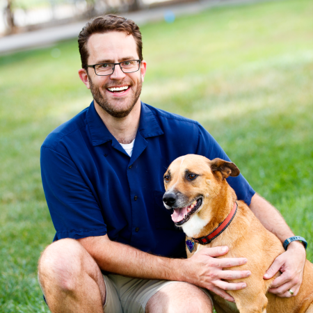

People
Jeffrey R. Stevens

E-mail: jeffrey.r.stevens@gmail.com
Phone: +1 402 472 3721
Dr. Stevens is the director of the Canine Cognition and Human Interaction Lab. He received his Ph.D. in Ecology, Evolution, and Behavior from the University of Minnesota in 2002. He then spent four years as a Ruth L. Kirschstein postdoctoral fellow in the Department of Psychology at Harvard University. From 2006-2011, he held a research scientist position in the Center for Adaptive Behavior and Cognition at the Max Planck Institute for Human Development.
Dr. Stevens is a Susan J. Rosowski Professor in the Department of Psychology and is a resident faculty member in the Center for Brain, Biology & Behavior. He was founding editor-in-chief of Frontiers in Comparative Psychology from 2010-2017. Dr. Stevens is interested in the evolution of decision making in humans and other animals. At the moment, his research focuses on intertemporal choice, risky choice, cooperation, and human-animal interaction. He teaches courses on Evolution, Behavior and Society; Controversial Issues in Psychology; the Psychology of Decision Making; and Data Science and Visualization in R.
Graduate Students
Anwyn Gatesy-Davis

Anwyn is a Ph.D. student who earned their B.A. in Psychology and Animal Behavior from Hampshire College in 2020. Their senior thesis was a study on dogs’ ability to follow human pointing gestures and compared the point-following abilities of herding breeds to that of non-herding breeds. After graduating, Anwyn worked as a lab manager for Dr. Daphna Buchsbaum’s Computational Cognitive Development Lab and Brown Dog Lab at Brown University. Anwyn is interested in how our long history of breeding dogs to help us on farms has shaped the behavior and cognition of those dogs.
London Wolff

London graduated with honors in Biology and Animal Behavior, Ecology and Conservation from Canisius College in 2016. She completed her senior thesis on the affects of the domestication process on dogs’ social cognitive skills. Subsequently she researched decision making with orangutans and dolphins as well as long-tailed macaque social structure at the Indianapolis Zoo. London is interested in exploring how social structure and developmental differences of individuals across and within species impact their decision making processes, specifically looking at impulsivity and risk taking.
Undergraduate Students
Hunter DeBoer

Hunter is a junior majoring in Psychology, Mathematics, and Physics. He plans on continuing to graduate school and become a college professor. Hunter loves dogs and is excited to work with them.
Hannah Fitzpatrick

Hannah is a senior at UNL majoring in Veterinary Biomedical Sciences. She plans on applying to veterinary school in the summer of 2022 to hopefully get accepted into Iowa State’s vet program for the fall of 2023. She is excited to observe and participate in research involving dogs and the psychology behind their behavior—topics she’s passionate about and hopes to include in her future career.
Maya Lashley

Maya is a junior studying Animal Science in the companion animal area. She is on the pre-vet track and is hoping to attend veterinary school after finishing her undergraduate degree. Maya is an active member in the Alpha Phi sorority on campus and currently serves as the Finance director for her chapter. She loves all animals, especially her two dogs and three cats. She is excited to learn more and participate in this research!
Ashley Llewellyn

Ashley is a freshman Animal Science major with the animal biology and biotechnology option. She hopes to pursue future graduate studies in animal genetics, biology, or cognitive-based research. She has previous dog experience working at her hometown boarding facility and personal care of her own loveable rescue. She is looking forward to participating in research she is passionate about!
Lauryn Rivale

Between working in a doggy daycare for two years and studying pre-vet, Lauren has been working with dogs her whole life. She’s always been fascinated by canine behavior and their interactions with other dogs and humans and how it affects them. Dogs have always had a big impact on her life and she’s interested to see how they affect those around her.
Yasmin Worth

Yasmin is a junior at UNL studying Biochemistry in a Pre-Veterinary focus and minoring in Animal Science. She loves being around animals, especially her cuddly cat. She is excited to participate in this research.
Former Lab Members
- Holly Ahmann
- Jessica Barela
- Meredith Batten
- Jesse Baumann-Berg
- Toria Biancalana
- Kenanile Bigba
- Brandon Bogus
- Megan Bosworth
- Rachel Bruner
- Katie Carey
- Denise Chin
- Allie Cruikshank
- Victoria Contreras
- Tyler Cully
- Yesenia Delgadillo-Orozco
- Miranda Dresen
- Chandler Dulin
- Juan Duque (Arcadia University)
- Wren Dwinell
- Jasmine Emerick
- Alex Enerson
- Rose Felice
- Krysten Fries
- Aiswary Ganapathy
- Cherylynn Gibson
- Francine Goh (MERC UNL)
- Patrick Griffin
- Shannon Guy
- Kris Hans
- Haley Hayes
- Treavor Heeney
- Madi Hemenway
- Megan Herridge
- Marisa Howell
- Kylie Hughes
- Teresa Jarrett
- Camryn Kelly
- Kendall Kelly
- Maggie Kempf
- Haley Kizer
- Emma Klein
- Laura Klein
- Kristina Lech
- Nik Leger
- Whitney Leichner
- Billy Lim
- Alexis Lindner
- Gretchen Lusso
- Athena Manning
- Stephanie Marsh
- Isaac Martinez
- Maddie Mathias
- Trevor Mattox
- Sama Mehta
- Carly Moran
- Brianna Moser
- Duy Nguyen
- Dina Morales
- Vitor Hugo Oliveira
- Christa Ostdiek
- Alexandria PytlikZillig
- Nina Radulovic
- Tanner Rasmussen
- McKenna Rezny
- Anna Rodriguez
- Sanjaya Roy
- Alex Ruhlman
- Kayla Ruterbories
- Alexis Saltzman
- Joelle Sanger
- Taylor Schendt
- Matt Schmitt
- Molly Shane
- Kole Smith
- Tyler Stading
- Emily Stockwell
- Noah Svec
- Elise Thayer (Farm Credit Services of America)
- Adam Thurley
- Destiny Vail
- Audrey Vist
- Liza Welles
- Sam Wenzel
- Bailey Wilson
- Haley Wilson
- Aotian Yang
- Chelsea Yang
- McKenna Yohe
- Molly Zuercher